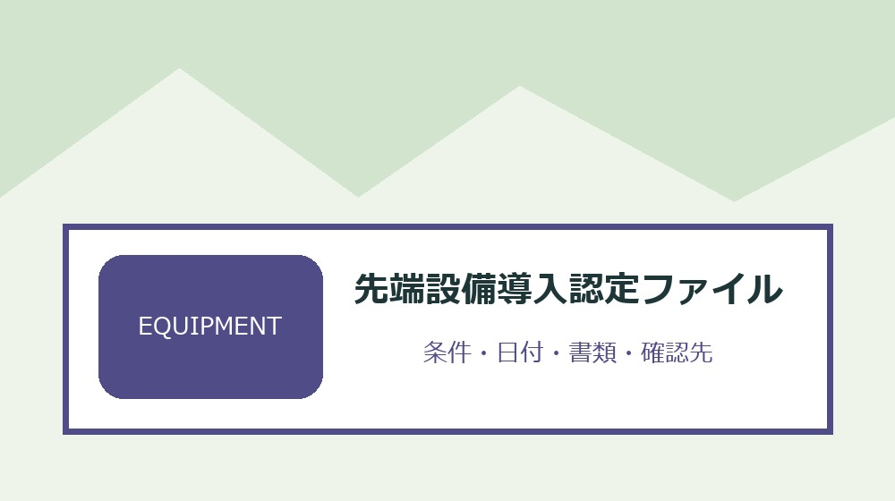
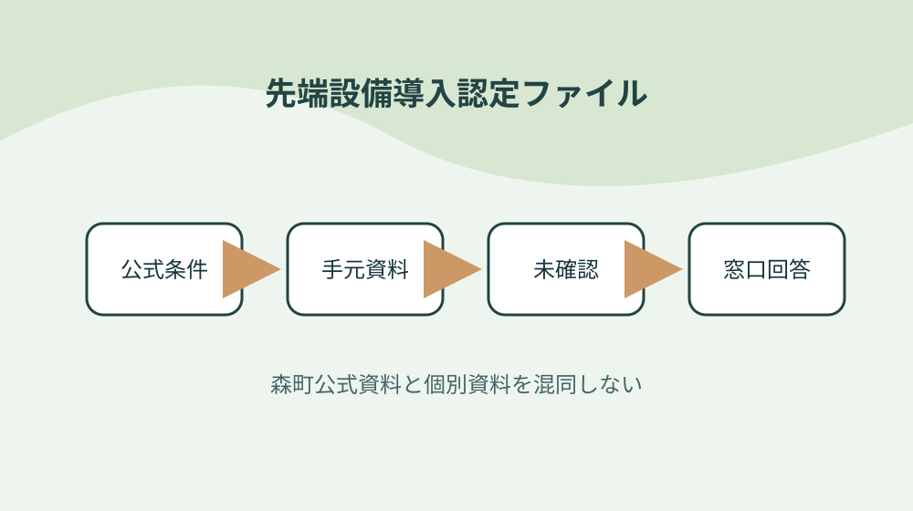

森町の先端設備等導入計画を認定・設備取得・税務資料で管理する

結論：設備を一台ずつ候補表へ載せることから始め、認定日と取得日を並べる条件と「森町は先端設備等導入計画の申請案内を公開する」の根拠を先端設備導入認定ファイルへ結びます。期限と次の確認先まで一行にすれば、森町の先端設備等導入計画を認定・設備取得・税務資料で管理する作業の取り違えを減らせます。
設備を一台ずつ候補表へ載せる
森町公式資料で確認できる事実は「森町は先端設備等導入計画の申請案内を公開する」です。設備を一台ずつ候補表へ載せるでは、この条件を先端設備導入認定ファイルの一行へ写し、対象者・対象物・確認日を同じ欄に置きます。制度名だけをメモせず、どの資料のどの条件を確認したかが家族や担当者にもたどれる形にしてください。
設備を一台ずつ候補表へ載せるを確かめるときは、「町の導入促進基本計画が別PDFで公開される」という公式条件と、手元の通知・領収書・型番・日付を別列にします。必要資料が揃わなければ空欄を推測で埋めず、先端設備導入認定ファイルへ未確認の理由と次の照会先を記します。この表の役割は結論を急ぐことではなく、森町の先端設備等導入計画を認定・設備取得・税務資料で管理するで起きる食い違いを安全に発見することです。
先端設備導入認定ファイルの作業日は、①「認定対象は中小企業等経営強化法の枠組みに基づく」の掲載資料と更新日を見る、②設備を一台ずつ候補表へ載せるの手元資料を照合する、③不足一点だけを窓口へ尋ねる、④回答日と担当を追記する順に進めます。共通条件だけで個別可否を断定せず、森町の先端設備等導入計画を認定・設備取得・税務資料で管理するに関する最新の運用を実行前に確かめます。
先端設備導入認定ファイルを引き継ぐ欄には、「申請前に認定経営革新等支援機関の確認を受ける」の確認結果、次に行うこと、期限、原本の保管場所を書きます。設備を一台ずつ候補表へ載せるを更新したら旧版を消さず、変更理由と回答した窓口を一行添えます。担当者が替わっても、その事実をどの資料で確かめたかまで戻れるため、同じ問い合わせや書類の取り直しを減らせます。
取得前という順序を固定する
森町公式資料で確認できる事実は「認定対象は中小企業等経営強化法の枠組みに基づく」です。取得前という順序を固定するでは、この条件を先端設備導入認定ファイルの一行へ写し、対象者・対象物・確認日を同じ欄に置きます。制度名だけをメモせず、どの資料のどの条件を確認したかが家族や担当者にもたどれる形にしてください。
取得前という順序を固定するを確かめるときは、「申請前に認定経営革新等支援機関の確認を受ける」という公式条件と、手元の通知・領収書・型番・日付を別列にします。必要資料が揃わなければ空欄を推測で埋めず、先端設備導入認定ファイルへ未確認の理由と次の照会先を記します。この表の役割は結論を急ぐことではなく、森町の先端設備等導入計画を認定・設備取得・税務資料で管理するで起きる食い違いを安全に発見することです。
先端設備導入認定ファイルの作業日は、①「確認書を町への申請資料に含める」の掲載資料と更新日を見る、②取得前という順序を固定するの手元資料を照合する、③不足一点だけを窓口へ尋ねる、④回答日と担当を追記する順に進めます。共通条件だけで個別可否を断定せず、森町の先端設備等導入計画を認定・設備取得・税務資料で管理するに関する最新の運用を実行前に確かめます。
先端設備導入認定ファイルを引き継ぐ欄には、「町の認定前に対象設備を取得しない順序が重要である」の確認結果、次に行うこと、期限、原本の保管場所を書きます。取得前という順序を固定するを更新したら旧版を消さず、変更理由と回答した窓口を一行添えます。担当者が替わっても、その事実をどの資料で確かめたかまで戻れるため、同じ問い合わせや書類の取り直しを減らせます。
支援機関への確認依頼を準備する
森町公式資料で確認できる事実は「確認書を町への申請資料に含める」です。支援機関への確認依頼を準備するでは、この条件を先端設備導入認定ファイルの一行へ写し、対象者・対象物・確認日を同じ欄に置きます。制度名だけをメモせず、どの資料のどの条件を確認したかが家族や担当者にもたどれる形にしてください。
支援機関への確認依頼を準備するを確かめるときは、「町の認定前に対象設備を取得しない順序が重要である」という公式条件と、手元の通知・領収書・型番・日付を別列にします。必要資料が揃わなければ空欄を推測で埋めず、先端設備導入認定ファイルへ未確認の理由と次の照会先を記します。この表の役割は結論を急ぐことではなく、森町の先端設備等導入計画を認定・設備取得・税務資料で管理するで起きる食い違いを安全に発見することです。
先端設備導入認定ファイルの作業日は、①「申請書と認定支援機関確認書を分けて保管する」の掲載資料と更新日を見る、②支援機関への確認依頼を準備するの手元資料を照合する、③不足一点だけを窓口へ尋ねる、④回答日と担当を追記する順に進めます。共通条件だけで個別可否を断定せず、森町の先端設備等導入計画を認定・設備取得・税務資料で管理するに関する最新の運用を実行前に確かめます。
先端設備導入認定ファイルを引き継ぐ欄には、「賃上げ方針を表明する場合の追加書類がある」の確認結果、次に行うこと、期限、原本の保管場所を書きます。支援機関への確認依頼を準備するを更新したら旧版を消さず、変更理由と回答した窓口を一行添えます。担当者が替わっても、その事実をどの資料で確かめたかまで戻れるため、同じ問い合わせや書類の取り直しを減らせます。
町の基本計画と照合する
森町公式資料で確認できる事実は「申請書と認定支援機関確認書を分けて保管する」です。町の基本計画と照合するでは、この条件を先端設備導入認定ファイルの一行へ写し、対象者・対象物・確認日を同じ欄に置きます。制度名だけをメモせず、どの資料のどの条件を確認したかが家族や担当者にもたどれる形にしてください。
町の基本計画と照合するを確かめるときは、「賃上げ方針を表明する場合の追加書類がある」という公式条件と、手元の通知・領収書・型番・日付を別列にします。必要資料が揃わなければ空欄を推測で埋めず、先端設備導入認定ファイルへ未確認の理由と次の照会先を記します。この表の役割は結論を急ぐことではなく、森町の先端設備等導入計画を認定・設備取得・税務資料で管理するで起きる食い違いを安全に発見することです。
先端設備導入認定ファイルの作業日は、①「固定資産税特例は認定だけで自動適用されない」の掲載資料と更新日を見る、②町の基本計画と照合するの手元資料を照合する、③不足一点だけを窓口へ尋ねる、④回答日と担当を追記する順に進めます。共通条件だけで個別可否を断定せず、森町の先端設備等導入計画を認定・設備取得・税務資料で管理するに関する最新の運用を実行前に確かめます。
先端設備導入認定ファイルを引き継ぐ欄には、「税務申告に必要な資料を別に確認する」の確認結果、次に行うこと、期限、原本の保管場所を書きます。町の基本計画と照合するを更新したら旧版を消さず、変更理由と回答した窓口を一行添えます。担当者が替わっても、その事実をどの資料で確かめたかまで戻れるため、同じ問い合わせや書類の取り直しを減らせます。

申請書と確認書を組にする
森町公式資料で確認できる事実は「固定資産税特例は認定だけで自動適用されない」です。申請書と確認書を組にするでは、この条件を先端設備導入認定ファイルの一行へ写し、対象者・対象物・確認日を同じ欄に置きます。制度名だけをメモせず、どの資料のどの条件を確認したかが家族や担当者にもたどれる形にしてください。
申請書と確認書を組にするを確かめるときは、「税務申告に必要な資料を別に確認する」という公式条件と、手元の通知・領収書・型番・日付を別列にします。必要資料が揃わなければ空欄を推測で埋めず、先端設備導入認定ファイルへ未確認の理由と次の照会先を記します。この表の役割は結論を急ぐことではなく、森町の先端設備等導入計画を認定・設備取得・税務資料で管理するで起きる食い違いを安全に発見することです。
先端設備導入認定ファイルの作業日は、①「変更時は変更認定の要否を確認する」の掲載資料と更新日を見る、②申請書と確認書を組にするの手元資料を照合する、③不足一点だけを窓口へ尋ねる、④回答日と担当を追記する順に進めます。共通条件だけで個別可否を断定せず、森町の先端設備等導入計画を認定・設備取得・税務資料で管理するに関する最新の運用を実行前に確かめます。
先端設備導入認定ファイルを引き継ぐ欄には、「設備名・型式・取得予定日を一台ずつ管理する」の確認結果、次に行うこと、期限、原本の保管場所を書きます。申請書と確認書を組にするを更新したら旧版を消さず、変更理由と回答した窓口を一行添えます。担当者が替わっても、その事実をどの資料で確かめたかまで戻れるため、同じ問い合わせや書類の取り直しを減らせます。
賃上げ表明の有無を分ける
森町公式資料で確認できる事実は「変更時は変更認定の要否を確認する」です。賃上げ表明の有無を分けるでは、この条件を先端設備導入認定ファイルの一行へ写し、対象者・対象物・確認日を同じ欄に置きます。制度名だけをメモせず、どの資料のどの条件を確認したかが家族や担当者にもたどれる形にしてください。
賃上げ表明の有無を分けるを確かめるときは、「設備名・型式・取得予定日を一台ずつ管理する」という公式条件と、手元の通知・領収書・型番・日付を別列にします。必要資料が揃わなければ空欄を推測で埋めず、先端設備導入認定ファイルへ未確認の理由と次の照会先を記します。この表の役割は結論を急ぐことではなく、森町の先端設備等導入計画を認定・設備取得・税務資料で管理するで起きる食い違いを安全に発見することです。
先端設備導入認定ファイルの作業日は、①「町の基本計画には対象区域や期間が示される」の掲載資料と更新日を見る、②賃上げ表明の有無を分けるの手元資料を照合する、③不足一点だけを窓口へ尋ねる、④回答日と担当を追記する順に進めます。共通条件だけで個別可否を断定せず、森町の先端設備等導入計画を認定・設備取得・税務資料で管理するに関する最新の運用を実行前に確かめます。
先端設備導入認定ファイルを引き継ぐ欄には、「申請先は森町の産業担当窓口である」の確認結果、次に行うこと、期限、原本の保管場所を書きます。賃上げ表明の有無を分けるを更新したら旧版を消さず、変更理由と回答した窓口を一行添えます。担当者が替わっても、その事実をどの資料で確かめたかまで戻れるため、同じ問い合わせや書類の取り直しを減らせます。
認定日と取得日を並べる
森町公式資料で確認できる事実は「町の基本計画には対象区域や期間が示される」です。認定日と取得日を並べるでは、この条件を先端設備導入認定ファイルの一行へ写し、対象者・対象物・確認日を同じ欄に置きます。制度名だけをメモせず、どの資料のどの条件を確認したかが家族や担当者にもたどれる形にしてください。
認定日と取得日を並べるを確かめるときは、「申請先は森町の産業担当窓口である」という公式条件と、手元の通知・領収書・型番・日付を別列にします。必要資料が揃わなければ空欄を推測で埋めず、先端設備導入認定ファイルへ未確認の理由と次の照会先を記します。この表の役割は結論を急ぐことではなく、森町の先端設備等導入計画を認定・設備取得・税務資料で管理するで起きる食い違いを安全に発見することです。
先端設備導入認定ファイルの作業日は、①「森町は先端設備等導入計画の申請案内を公開する」の掲載資料と更新日を見る、②認定日と取得日を並べるの手元資料を照合する、③不足一点だけを窓口へ尋ねる、④回答日と担当を追記する順に進めます。共通条件だけで個別可否を断定せず、森町の先端設備等導入計画を認定・設備取得・税務資料で管理するに関する最新の運用を実行前に確かめます。
先端設備導入認定ファイルを引き継ぐ欄には、「町の導入促進基本計画が別PDFで公開される」の確認結果、次に行うこと、期限、原本の保管場所を書きます。認定日と取得日を並べるを更新したら旧版を消さず、変更理由と回答した窓口を一行添えます。担当者が替わっても、その事実をどの資料で確かめたかまで戻れるため、同じ問い合わせや書類の取り直しを減らせます。
税務申告資料を別フォルダにする
森町公式資料で確認できる事実は「森町は先端設備等導入計画の申請案内を公開する」です。税務申告資料を別フォルダにするでは、この条件を先端設備導入認定ファイルの一行へ写し、対象者・対象物・確認日を同じ欄に置きます。制度名だけをメモせず、どの資料のどの条件を確認したかが家族や担当者にもたどれる形にしてください。
税務申告資料を別フォルダにするを確かめるときは、「町の導入促進基本計画が別PDFで公開される」という公式条件と、手元の通知・領収書・型番・日付を別列にします。必要資料が揃わなければ空欄を推測で埋めず、先端設備導入認定ファイルへ未確認の理由と次の照会先を記します。この表の役割は結論を急ぐことではなく、森町の先端設備等導入計画を認定・設備取得・税務資料で管理するで起きる食い違いを安全に発見することです。
先端設備導入認定ファイルの作業日は、①「認定対象は中小企業等経営強化法の枠組みに基づく」の掲載資料と更新日を見る、②税務申告資料を別フォルダにするの手元資料を照合する、③不足一点だけを窓口へ尋ねる、④回答日と担当を追記する順に進めます。共通条件だけで個別可否を断定せず、森町の先端設備等導入計画を認定・設備取得・税務資料で管理するに関する最新の運用を実行前に確かめます。
先端設備導入認定ファイルを引き継ぐ欄には、「申請前に認定経営革新等支援機関の確認を受ける」の確認結果、次に行うこと、期限、原本の保管場所を書きます。税務申告資料を別フォルダにするを更新したら旧版を消さず、変更理由と回答した窓口を一行添えます。担当者が替わっても、その事実をどの資料で確かめたかまで戻れるため、同じ問い合わせや書類の取り直しを減らせます。
変更認定の要否を確かめる
森町公式資料で確認できる事実は「認定対象は中小企業等経営強化法の枠組みに基づく」です。変更認定の要否を確かめるでは、この条件を先端設備導入認定ファイルの一行へ写し、対象者・対象物・確認日を同じ欄に置きます。制度名だけをメモせず、どの資料のどの条件を確認したかが家族や担当者にもたどれる形にしてください。
変更認定の要否を確かめるを確かめるときは、「申請前に認定経営革新等支援機関の確認を受ける」という公式条件と、手元の通知・領収書・型番・日付を別列にします。必要資料が揃わなければ空欄を推測で埋めず、先端設備導入認定ファイルへ未確認の理由と次の照会先を記します。この表の役割は結論を急ぐことではなく、森町の先端設備等導入計画を認定・設備取得・税務資料で管理するで起きる食い違いを安全に発見することです。
先端設備導入認定ファイルの作業日は、①「確認書を町への申請資料に含める」の掲載資料と更新日を見る、②変更認定の要否を確かめるの手元資料を照合する、③不足一点だけを窓口へ尋ねる、④回答日と担当を追記する順に進めます。共通条件だけで個別可否を断定せず、森町の先端設備等導入計画を認定・設備取得・税務資料で管理するに関する最新の運用を実行前に確かめます。
先端設備導入認定ファイルを引き継ぐ欄には、「町の認定前に対象設備を取得しない順序が重要である」の確認結果、次に行うこと、期限、原本の保管場所を書きます。変更認定の要否を確かめるを更新したら旧版を消さず、変更理由と回答した窓口を一行添えます。担当者が替わっても、その事実をどの資料で確かめたかまで戻れるため、同じ問い合わせや書類の取り直しを減らせます。
実績資料を設備番号で残す
森町公式資料で確認できる事実は「確認書を町への申請資料に含める」です。実績資料を設備番号で残すでは、この条件を先端設備導入認定ファイルの一行へ写し、対象者・対象物・確認日を同じ欄に置きます。制度名だけをメモせず、どの資料のどの条件を確認したかが家族や担当者にもたどれる形にしてください。
実績資料を設備番号で残すを確かめるときは、「町の認定前に対象設備を取得しない順序が重要である」という公式条件と、手元の通知・領収書・型番・日付を別列にします。必要資料が揃わなければ空欄を推測で埋めず、先端設備導入認定ファイルへ未確認の理由と次の照会先を記します。この表の役割は結論を急ぐことではなく、森町の先端設備等導入計画を認定・設備取得・税務資料で管理するで起きる食い違いを安全に発見することです。
先端設備導入認定ファイルの作業日は、①「申請書と認定支援機関確認書を分けて保管する」の掲載資料と更新日を見る、②実績資料を設備番号で残すの手元資料を照合する、③不足一点だけを窓口へ尋ねる、④回答日と担当を追記する順に進めます。共通条件だけで個別可否を断定せず、森町の先端設備等導入計画を認定・設備取得・税務資料で管理するに関する最新の運用を実行前に確かめます。
先端設備導入認定ファイルを引き継ぐ欄には、「賃上げ方針を表明する場合の追加書類がある」の確認結果、次に行うこと、期限、原本の保管場所を書きます。実績資料を設備番号で残すを更新したら旧版を消さず、変更理由と回答した窓口を一行添えます。担当者が替わっても、その事実をどの資料で確かめたかまで戻れるため、同じ問い合わせや書類の取り直しを減らせます。
良い点
森町公式資料で確認できる事実は「申請書と認定支援機関確認書を分けて保管する」です。良い点では、この条件を先端設備導入認定ファイルの一行へ写し、対象者・対象物・確認日を同じ欄に置きます。制度名だけをメモせず、どの資料のどの条件を確認したかが家族や担当者にもたどれる形にしてください。
良い点を確かめるときは、「賃上げ方針を表明する場合の追加書類がある」という公式条件と、手元の通知・領収書・型番・日付を別列にします。必要資料が揃わなければ空欄を推測で埋めず、先端設備導入認定ファイルへ未確認の理由と次の照会先を記します。この表の役割は結論を急ぐことではなく、森町の先端設備等導入計画を認定・設備取得・税務資料で管理するで起きる食い違いを安全に発見することです。
先端設備導入認定ファイルの作業日は、①「固定資産税特例は認定だけで自動適用されない」の掲載資料と更新日を見る、②良い点の手元資料を照合する、③不足一点だけを窓口へ尋ねる、④回答日と担当を追記する順に進めます。共通条件だけで個別可否を断定せず、森町の先端設備等導入計画を認定・設備取得・税務資料で管理するに関する最新の運用を実行前に確かめます。
先端設備導入認定ファイルを引き継ぐ欄には、「税務申告に必要な資料を別に確認する」の確認結果、次に行うこと、期限、原本の保管場所を書きます。良い点を更新したら旧版を消さず、変更理由と回答した窓口を一行添えます。担当者が替わっても、その事実をどの資料で確かめたかまで戻れるため、同じ問い合わせや書類の取り直しを減らせます。
注文したい点
森町公式資料で確認できる事実は「固定資産税特例は認定だけで自動適用されない」です。注文したい点では、この条件を先端設備導入認定ファイルの一行へ写し、対象者・対象物・確認日を同じ欄に置きます。制度名だけをメモせず、どの資料のどの条件を確認したかが家族や担当者にもたどれる形にしてください。
注文したい点を確かめるときは、「税務申告に必要な資料を別に確認する」という公式条件と、手元の通知・領収書・型番・日付を別列にします。必要資料が揃わなければ空欄を推測で埋めず、先端設備導入認定ファイルへ未確認の理由と次の照会先を記します。この表の役割は結論を急ぐことではなく、森町の先端設備等導入計画を認定・設備取得・税務資料で管理するで起きる食い違いを安全に発見することです。
先端設備導入認定ファイルの作業日は、①「変更時は変更認定の要否を確認する」の掲載資料と更新日を見る、②注文したい点の手元資料を照合する、③不足一点だけを窓口へ尋ねる、④回答日と担当を追記する順に進めます。共通条件だけで個別可否を断定せず、森町の先端設備等導入計画を認定・設備取得・税務資料で管理するに関する最新の運用を実行前に確かめます。
先端設備導入認定ファイルを引き継ぐ欄には、「設備名・型式・取得予定日を一台ずつ管理する」の確認結果、次に行うこと、期限、原本の保管場所を書きます。注文したい点を更新したら旧版を消さず、変更理由と回答した窓口を一行添えます。担当者が替わっても、その事実をどの資料で確かめたかまで戻れるため、同じ問い合わせや書類の取り直しを減らせます。
対案・結論
先端設備導入認定ファイルは、全項目を一度で完成させるより、「設備を一台ずつ候補表へ載せる」から確定する方が実用的です。公式条件、手元資料、窓口回答を別欄にし、町の導入促進基本計画が別PDFで公開されるという事実と個別事情の食い違いを消さずに残してください。
認定日と取得日を並べるに費用や契約が伴う場合は、対象・期限・事前手続を再確認してから進めます。森町の共通案内だけで個別案件を断定せず、申請書と認定支援機関確認書を分けて保管するという確認済み情報と手元資料を示して尋ねます。
結論は、実績資料を設備番号で残すまでを今日の一行にし、次の確認日を決めることです。先端設備導入認定ファイルがあれば、森町の先端設備等導入計画を認定・設備取得・税務資料で管理するの作業を家族や社内担当が同じ根拠から続けられます。
申請先は森町の産業担当窓口であるという条件が更新された場合は旧版を削除せず、変更日と採用理由を記します。先端設備導入認定ファイルに履歴が残れば、古い書類や判断を使った理由も後から説明できます。
大石の視点
ここまでの「森町は先端設備等導入計画の申請案内を公開する」などの制度条件は森町公式資料で確認できる事実です。以下は、私、大石浩之が先端設備導入認定ファイルを運用するためにすすめる方法であり、森町や関係機関の公式見解ではありません。
私は先端設備導入認定ファイルを紙一枚から始め、取得前という順序を固定するの原本を動かさず、写しや写真へ番号を付ける方法を勧めます。森町の先端設備等導入計画を認定・設備取得・税務資料で管理するの確認で原本を持ち歩く回数を減らせるからです。
税務申告資料を別フォルダにするに未確認欄が残っても失敗扱いしません。確認先と期限が書かれた未確認欄は、賃上げ方針を表明する場合の追加書類があるを根拠なく個別案件へ当てはめるより価値があります。
最後に、先端設備導入認定ファイルに含む個人情報や事業情報は共有範囲を決めます。実績資料を設備番号で残すための内部版と外部提出版を同じファイルにせず、必要部分だけを渡せる構成にしてください。
よくある質問
先端設備導入認定ファイルで最初に確認することは何ですか。
対象者・対象物、基準日、手元資料、森町公式の条件を一行にします。森町は先端設備等導入計画の申請案内を公開するという共通条件を起点にしつつ、個別の可否は資料と窓口回答で確定します。
資料が足りないまま先端設備導入認定ファイルを作れますか。
作れます。支援機関への確認依頼を準備するに不足があれば未確認と記し、必要資料、確認先、確認期限を残します。推測で埋めないことが、先端設備導入認定ファイルから安全に作業を再開する条件です。
森町公式ページを保存すれば再確認は不要ですか。
申請先は森町の産業担当窓口であるなどの条件は変わることがあります。先端設備導入認定ファイルへURL、ページ名、確認日を残し、認定日と取得日を並べるを実行する直前に現行案内を再確認してください。
先端設備導入認定ファイルを家族や担当者へ渡すとき何を添えますか。
実績資料を設備番号で残すため、確認済み事実、未確認事項、期限、次の担当、原本の保管場所、町へ尋ねた日と回答を添えます。先端設備導入認定ファイルに含む個人情報は渡す相手と保管方法を限定します。
公式情報源
最終確認日：2026-08-19 ／ 公表事実と執筆者の解釈・意見を分けて記載しています。